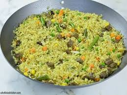
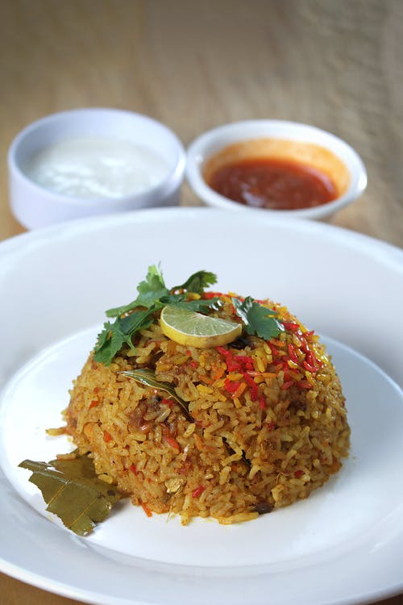
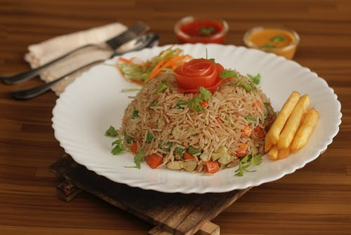

Fried Rice
Fried rice is a dish of cooked rice that has been stir-fried in a wok or a frying pan and is usually mixed with other ingredients such as eggs, vegetables, seafood, or meat. It is often eaten alone or as an accompaniment to another dish.
Ingredients
- 2 Cups cooked Rice
- 1 Cup Mixed Vegetables I used Carrots, Sweet Peas, Sweet Corn and Green Beans
- 1 cup Onion diced
- 2 Scallions
- 1 Cup Beef Liver Cubed
- 1/2 Teaspoon Thyme
- 1 Teaspoon Curry powder
- 1/2 cup Chicken stock
- 1 Stock cube
- 3 Tablespoons Oil for frying
- Salt to taste
Procedure of preparation
- Add the parboiled Rice to the stock and cook until the water is dried up.🤭😍
- Preheat the oil in a Pan, throw in the Onions and fry for a minute or two, add the scallions, mixed vegetables and the seasonings ( Thyme, Curry Powder, Salt and Stock Cube)🤗🍛
- Throw in the rice and stir-fry for about 3 to 5 Minutes. Take it off the heat and serve ☺️🍚


